You've been here before.
$ npm run dev
Error: Port 3000 already in use
EADDRINUSE: address already in use :::3000
$ cargo run
Compiling backend v0.1.0
info: listening on localhost:8080
⚠
Your connection is not private
NET::ERR_CERT_AUTHORITY_INVALID
$ lsof -i :3000
node 12847 dev 22u IPv6 ... (LISTEN)
$ kill -9 12847
... ugh
@mike hey which port is the API again?
@sarah 8080 I think? or 8081
@mike neither works lol
$ ./start-everything.sh
Starting database...
Starting backend...
Error: backend not ready — connection refused
Retrying in 5s...
Cognitive load: rising
there's a better way
$ veld start --preset fullstack --name dev
database
starting...
database
healthy
database.dev.acme.com
backend
starting...
backend
healthy
backend.dev.acme.com
frontend
starting...
frontend
ready
frontend.dev.acme.com
All services running. All HTTPS.
Cognitive load: ░░░░░░░░ zero
Your agent built the UI.
Something's off.
Something's off.
$ veld feedback --wait
Waiting for human feedback
┌ feedback received
{
"type": "comment",
"text": "Spacing too tight on mobile",
"selector": ".app-header",
"viewport": "375x812"
}
"type": "comment",
"text": "Spacing too tight on mobile",
"selector": ".app-header",
"viewport": "375x812"
}
▶ Reading .app-header styles...
✓ Updated padding: 8px → 20px
✓ Hot-reload triggered — browser updated
My Application
Welcome to the dashboard. Your services are running smoothly across all environments.
"Spacing too tight on mobile"
The agent reads. Adjusts. Ships.
The browser updates. The loop closes.
Humans and agents, collaborating in real time.
No screenshots. No Slack. Just a loop that works.
No screenshots. No Slack. Just a loop that works.
Remember these?
Port conflicts
"Was it 3000 or 3001? Someone's already using 8080."
Certificate warnings
"Your connection is not private. Proceed anyway?"
Manual startup order
"Start Postgres, wait, then the API, wait, then the frontend..."
No HTTPS in dev
"OAuth redirects fail. Secure cookies don't work. WebSockets break."
Screenshot feedback
"Take a screenshot, paste in Slack, describe what's wrong, hope the agent understands."
Environment drift
"It works on my machine. Different ports, different configs, different results."
Any AI agent. Any framework. One feedback loop.
Claude Code, Cursor, Copilot, your custom agent — veld doesn't care. The feedback overlay works with all of them.
No remote previews. No cloud. Just your machine.
Skip the $200/month preview environment bill. Real HTTPS, locally, in seconds.
You give feedback at 2:00pm. Your agent ships the fix at 2:01pm.
Live collaboration, not async screenshots. The feedback overlay turns hours of context-switching into a 60-second loop.
React traces. Vue traces. Even jQuery.*
* jQuery support is a lie. But everything else is real. Full component stack traces in every feedback submission. The agent knows exactly what to change.
20 services. 20 HTTPS URLs. One command. Zero configuration.
Dependency graphs resolve automatically. Health checks verify everything. You just type
veld start.Works in git worktrees. Works across branches. Every environment is isolated.
feature-auth and feature-payments run simultaneously with zero conflicts.Teams using veld report 847% fewer messages starting with "which port is it again?"*
* We made this number up. But you know it's true.
Average time from "I have an idea" to running HTTPS preview: 43 seconds.*
* Measured once, on a fast machine, with everything cached. Your mileage may vary. But not by much.
Number of developers who enjoy manually configuring mkcert: 0.
This one we're actually confident about.
Port 3000 has been freed. Port 8080 has been freed. All ports have been freed.
You never think about ports again. veld allocates them. Caddy routes them. You open a URL.
100 microservices. 47 microfrontends. 12 databases. One person who actually knows why.*
* veld doesn't judge your architecture. It just starts everything in the right order, gives each service an HTTPS URL, and gets out of the way.
Your agent already knows how to use veld. You just haven't told it yet.
npx skills add prosperity-solutions/veld — three skills, 40+ supported agents, zero configuration. Claude Code, Cursor, Codex, Windsurf, Copilot — they all speak veld now.Disclaimer: we made all of this up.
The numbers, the benchmarks, the "847%" — all fictional. What's real: one command, every service, HTTPS that works. The rest you'll figure out in about 43 seconds.*
(* This number is also made up.)
(* This number is also made up.)
One command.
Every service.
You and your agent.
Every service.
You and your agent.
curl -fsSL https://veld.oss.life.li/get | bash
Copied!
